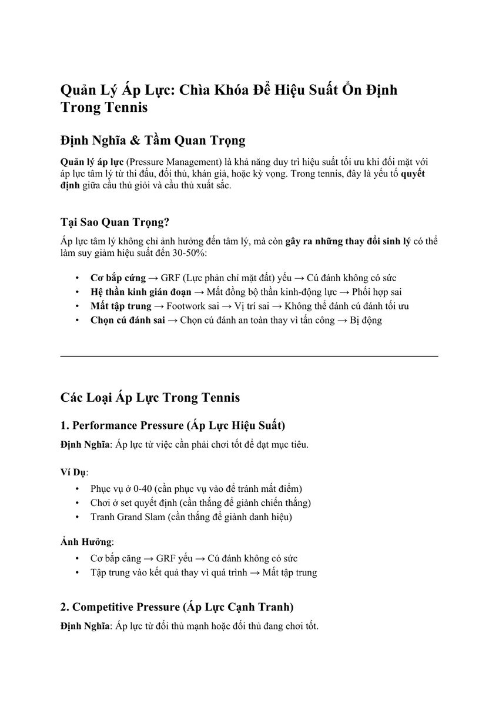
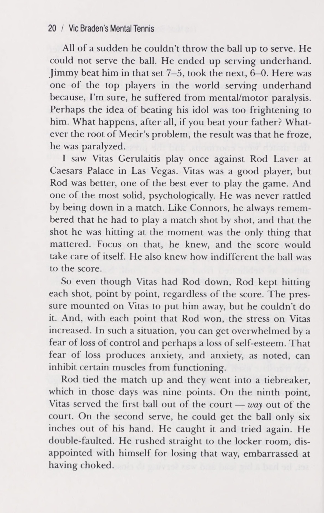
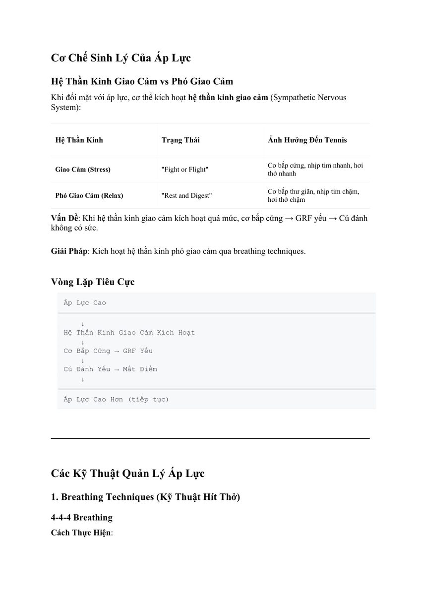

1. Định Nghĩa & Tầm Quan Trọng Của Quản Lý Áp Lực
Quản lý áp lực (Pressure Management) là năng lực duy trì hiệu suất vận động và độ chính xác chiến thuật ở mức tối ưu khi đối mặt với những sức ép tâm lý dữ dội từ tính chất trận đấu, đối thủ, sự kỳ vọng của khán giả hoặc nỗi sợ thất bại của chính bản thân.
Trong quần vợt hiện đại, kỹ thuật cơ sinh học của các tay vợt chuyên nghiệp chênh lệch nhau không quá 5%. Điểm phân định giữa một vận động viên thường xuyên dừng bước ở vòng bảng và một nhà vô địch Grand Slam nằm ở khả năng "chơi thứ quần vợt tốt nhất của mình tại những thời khắc tồi tệ nhất".

Hình 1: Tầm quan trọng của Quản lý Áp lực (Pressure Management). Áp lực không thể bị xóa bỏ hoàn toàn; người chiến thắng là người học được cách làm chủ và chuyển hóa áp lực thành nguồn năng lượng tập trung sắc bén.
Hình 7: Khắc phục tâm lý tự ti và thiết lập lập trình ngôn ngữ tư duy tích cực khi chạm trán đối thủ hạt giống.2. Ba Nguồn Gốc Áp Lực Chính Trong Trận Đấu Quần Vợt
Tay vợt trên sân liên tục chịu sự tác động đồng thời của ba tầng áp lực:
- Áp lực trận đấu (Match Pressure): Xuất hiện tại các thời điểm điểm số nhạy cảm như Break-point, Set-point, Match-point hoặc loạt Tie-break nghẹt thở. Nỗi sợ để vuột mất chiến thắng khiến người chơi có xu hướng co cụm, giảm tốc độ vung vợt và đánh bóng thiếu quyết đoán.
- Áp lực đối thủ (Opponent Pressure): Cảm giác bị áp đảo khi phải đối đầu với một đối thủ có đẳng cấp vượt trội (như Djokovic, Nadal, Federer) hoặc khi đối thủ đang dẫn trước 0-5 với phong độ hủy diệt. Áp lực này khiến người chơi cảm thấy bất lực và tự hoài nghi năng lực của chính mình.
- Áp lực cảm xúc nội tâm (Emotional Pressure): Cảm giác tức giận sau một quyết định gây tranh cãi của trọng tài, sự thất vọng khi mắc lỗi giao bóng kép liên tiếp, hoặc gánh nặng từ sự kỳ vọng quá lớn của gia đình và huấn luyện viên.

Hình 2: Cơ chế sinh lý học của áp lực. Hệ Thần Kinh Giao Cảm gây co thắt mạch máu và gồng cứng cơ bắp; trong khi Hệ Thần Kinh Phó Giao Cảm tái lập nhịp tim ổn định và độ mềm mại của cánh tay.3. Cơ Chế Sinh Lý Học: Cuộc Chiến Giữa Hai Hệ Thần Kinh
Khi não bộ nhận diện tình huống nguy hiểm hoặc áp lực thi đấu cực độ, trung tâm hạnh nhân (amygdala) sẽ kích hoạt Hệ Thần Kinh Giao Cảm (Sympathetic Nervous System) theo phản xạ sinh tồn "Chiến hoặc Biến" (Fight or Flight):
Bảng So Sánh Tác Động Của Hai Trạng Thái Thần Kinh
| Chỉ Số Sinh Lý | Hệ Thần Kinh Giao Cảm (Stress / Căng Thẳng) | Hệ Thần Kinh Phó Giao Cảm (Bình Tĩnh / Thư Giãn) |
|---|---|---|
| Nhịp tim & Huyết áp | Tăng vọt đột ngột, thở nông và dồn dập | Chậm lại, nhịp thở sâu và đều đặn |
| Trạng thái cơ bắp | Gồng cứng, khớp cổ tay bị khóa, run tay nhẹ | Thả lỏng đàn hồi, khớp cổ tay dẻo dai linh hoạt |
| Tầm nhìn quang học | Tầm nhìn đường hầm hẹp (tunnel vision), phán đoán chậm | Bao quát toàn cảnh sân đấu (peripheral vision), đọc bóng sớm |
| Chất lượng cú đánh | Đánh bóng rụt rè, bóng bay cạn, dễ tự đánh hỏng | Vung vợt hết biên độ, bóng đầm sâu và uy lực |